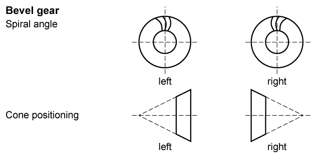

|
|
|


弧齿螺旋角与螺旋角
该角度在齿宽的中间位置输入。对于斜齿锥齿轮，螺旋角在整个齿宽上保持不变。然而，对于弧齿锥齿轮，螺旋角沿齿宽变化。
对于准双曲面齿轮，螺旋角在齿轮 2 的齿宽中间位置指定。然后使用该值计算齿轮 1（小齿轮）的值。
您可以选择任意值作为齿宽中间位置的螺旋角。但是，我们建议您使用 30° 至 45° 之间的较大角度，以确保最佳的运行性能。只有在必须减小轴承载荷时，才应选择小于此指导值的值。

图 16.2：弧齿螺旋角与螺旋角
点击螺旋角输入字段右侧的 加号按钮，显示 窗口，您可以在其中查看弧齿锥齿轮的内侧和外侧螺旋角。
Spiral and helix angle
The angle is input in the middle of the facewidth. In the case of helical-toothed bevel gears, the helix angle remains constant across the facewidth. However, in spiral bevel gears the spiral angle changes across the facewidth.
In hypoid gears, the spiral angle is specified in the middle of the facewidth for Gear 2. This value is then used to calculate the value for Gear 1 (pinion).
You can select any value as the spiral angle in the middle of the facewidth. However, we recommend you use a larger angle of between 30° and 45° to ensure optimum running performance. You should only select a value that is less than this guide value if the bearing load has to be reduced.
Figure 16.2: Spiral and helix angle
Click the Plus button to the right of the spiral angle input field to display the window, where you can check the internal and external spiral angle for spiral bevel gears.